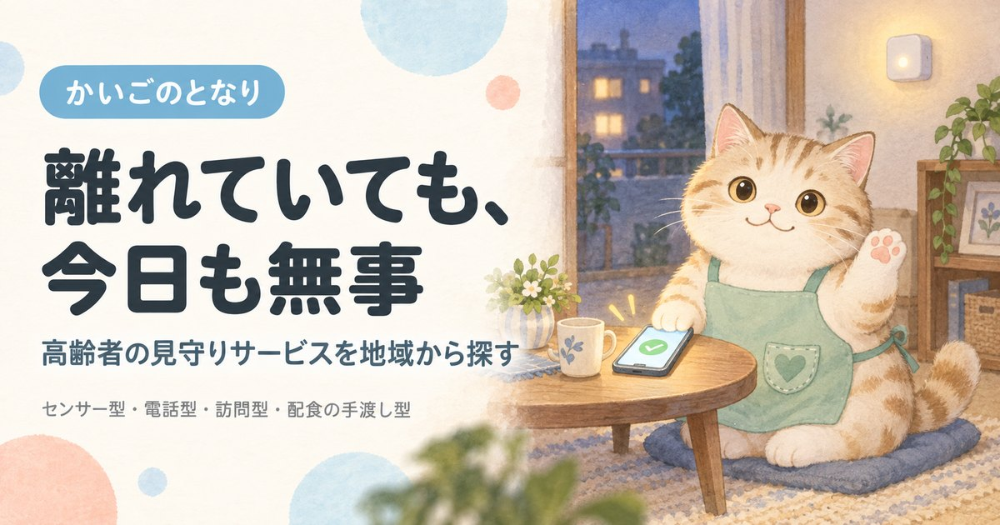

高齢者の見守りサービスを地域から探す

見守りサービスは「何かあったときに気づける仕組み」です。センサー型・通報型・電話型・訪問型で向き不向きが大きく違い、自治体が無料または低額で提供しているものもあります。まずタイプの違いから確認してください。
都道府県から探す
東京都準備中神奈川県準備中埼玉県準備中千葉県準備中大阪府準備中愛知県準備中兵庫県準備中福岡県準備中北海道準備中京都府準備中静岡県準備中広島県準備中
準備中のエリアは、掲載できる事業者情報がそろい次第の公開となります。
4つのタイプと向き不向き
「見守り」とひとことで言っても仕組みはまったく違います。何を心配しているのかで選ぶタイプが決まります。
| タイプ | 仕組み | 向いている状況 | 弱点 |
|---|---|---|---|
| センサー型 | 人感センサー・ドア開閉・電気ポットなどの使用状況を家族に通知 | 本人に操作をさせたくない／認知症で機器を使えない | 異変の「種類」までは分からない |
| 緊急通報型 | ボタンを押すとコールセンターや警備会社につながる。駆けつけが付く場合も | 転倒・急病のリスクが高い／ひとり暮らし | 本人が押せない状態だと働かない |
| 電話・アプリ型 | 自動音声やアプリで毎日安否を確認し、結果を家族へ連絡 | 離れて暮らす家族が日々の状況を知りたい | 応答がないときの駆けつけは別契約 |
| 訪問型 | 担当者が定期的に自宅を訪問し、様子を家族へ報告 | 顔を見て確かめたい／会話の変化に気づきたい | 頻度が月1回程度と低い |
配食サービスの手渡しも、実質的な見守りです。毎日決まった時間に顔を合わせるため、異変に最も早く気づける形のひとつです。食事の心配もあるなら宅配弁当・配食サービスと一本化するほうが、費用も手間も減ります。
まず自治体の制度を確認する
多くの市区町村が「緊急通報システム」という名称で、通報装置の貸与を行っています。ひとり暮らしで慢性疾患があるなど対象要件はありますが、無料または低額で利用でき、民間サービスより負担が軽くなることがほとんどです。
- 名称は自治体ごとに違います「緊急通報システム事業」「高齢者救急通報システム」「見守りサポート事業」など。「（市区町村名）＋緊急通報システム」で検索してください。
- 対象要件を先に確認年齢、ひとり暮らしかどうか、健康状態、所得など。要件を満たさない場合でも民間サービスは誰でも使えます。
- 申込先は高齢福祉の担当課介護保険の窓口とは別のことが多く、地域包括支援センター経由で案内してもらえます。
料金の目安
全国どこでも使える例として、日本郵便「郵便局のみまもりサービス」の料金を示します（2026年9月時点・税込）。
| プラン | 月額 | 内容 |
|---|---|---|
| みまもり訪問サービス | 2,500円 | 月1回、郵便局員が訪問し、写真付き報告書で家族に報告 |
| みまもりでんわサービス（固定電話） | 1,070円 | 毎日、自動音声で体調確認。結果をメールで報告 |
| みまもりでんわサービス（携帯電話） | 1,280円 | 同上 |
| 訪問＋でんわ セット | 3,460円 | セット利用で毎月110円の割引 |
| 駆けつけサービス（オプション） | 880円〜 | 警備会社が緊急対応。実際の駆けつけは別途5,500円 |
※センサー型・緊急通報型は、初期費用（機器代・工事費）が別途かかる場合があります。警備会社のホームセキュリティに付帯するプランもあります。
賃貸の入居審査でも効きます
高齢者が賃貸を断られる理由のひとつは、貸主の「室内で事故が起きないか」という不安です。申し込みの段階で見守りサービスの導入を伝えると、この不安に直接答えられます。詳しくは高齢者可の賃貸をご覧ください。
選ぶときの確認事項
- 1. 異常を検知したあと、誰が動くのか家族に通知が来るだけなのか、駆けつけまで含むのか。遠方の家族だけでは間に合いません。
- 2. 本人の操作が要るか認知症がある場合、ボタンを押す前提の仕組みは働かないことがあります。
- 3. 初期費用と解約条件機器代・工事費、最低利用期間、解約時の撤去費用。
- 4. 自治体の制度を先に確認したか民間契約の前に、必ず市区町村の窓口に問い合わせてください。
ほかのカテゴリ
訪問介護ホームヘルパーが自宅に来て、入浴・食事・掃除を手伝う介護保険サービス訪問看護医療的なケアが必要でも自宅で暮らすための、看護師の訪問デイサービス送迎・入浴・食事・機能訓練を日帰りで。家族が休める時間もつくるショートステイ数日から数週間あずけて、介護する側が倒れる前に休む福祉用具レンタル介護ベッドも車いすも、買う前に借りられる。住宅改修は20万円まで宅配弁当・配食サービス高齢者専門の宅配弁当。手渡しで安否確認、やわらか食や治療食にも対応高齢者可の賃貸年齢を理由に断られない部屋探し。公的な居住支援と専門サービス家事代行介護保険では頼めない掃除・洗濯・買い物・庭の手入れを任せる終活生前整理・エンディングノート・相続の手続きを、家族が困らない形に